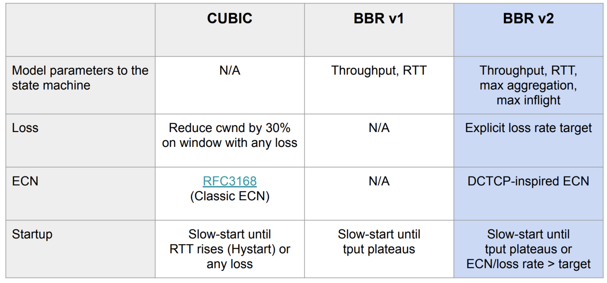

理解TCP拥塞控制
从各方面来说今天的互联网传输数据的速度都不甚理想，特别是移动互联网爆发，我们还是要忍耐下面的各种问题：
- 大部分移动用户要忍受数秒的延迟
- 机场和大会场馆的共享 WIFI 信号一般都很差
- 跨大洲通信时，两端的带宽都是Gbps级别, 但传输确只能达到Mbps
这些问题主要是由于TCP的设计导致，TCP刚面世的年代链路带宽和内存容量分别以 Mbps 和 KB计，中间链路短、路由缓存也少，所以对拥塞的控制主要是以丢包的观点进行。
互联网诞生到今，已经接近40多年了，网卡由最初的Mbps 到 Gbps，内存从KB 到 GB，跨洋长链路的出现，4G/5G/WiFi无线网络的应用，带宽时延积越来越大，链路层和物理层误码导致的随机丢包会时常出现，这就导致丢包和拥塞之间的关系也变得愈发微弱，基于延迟或丢包来判断拥塞这种由事件驱动调整拥塞窗户非常被动，也很难现代互联网发挥作用。
解决拥塞的前置
要解决拥塞，首先我们得理解什么是拥塞，以及拥塞是怎么发生的？
当TCP传输数据时候，中间的网络链路是复杂动态的，中间网关节点瓶颈带宽、路由路径的变化等等都影响传输效率，这是一个非常复杂的过程。去理解这些过程容易苦涩难懂。
Google发布过一篇BBR的论文，文章内有个图片比较清晰的解释了拥塞控制中的各个关系，我们围绕这个图片去理解，就能很好搞懂TCP的拥塞控制。

我们根据这张图梳理整个链路，他有这么几个物理属性：
- RTprop (round-trip propagation time). 两端之间最小时延，取决于物理距离.
- BtlBw （bottleneck bandwidth）瓶颈带宽. 把链路想象成物理管道，RTprop 就是管道的长度，BtlBw 则是管道最窄处的直径）
- BtlBufSize 链路之间各个路由节点的缓存
- BDP 带宽时延积 整条物理链路（不含路由器缓存）所能储藏的比特数据之和 BDP = BtlBw * RTprop
除了上面的物理属性，TCP的连接效率还关注两个真实属性：
- T（时延）：数据从发送端到接收端实际时延，对应于图中的round-trip time
- R（带宽）：数据的实际传输带宽，对应于图中的delivery rate
此外，为了分析T与R，再引入一个概念
- D：数据量（已发送但还未被确认的数据量） （对应于inflight data）
有了以上的定义，肯定可以知晓 T >= RTprop （实际时延肯定大于最小时延），R <= BtlBw （实际带宽 肯定也小于瓶颈带宽）
分区
横轴表示 inflight 数据量，有三个关键的区间 (0, BDP), (BDP, BtlneckBuffSize),(BtlneckBuffSize, infinity)
- (0, BDP): 这个区间内，客户端发送的数据并未占满瓶颈带宽, 应用受限（app limited）区
- (BDP, BtlneckBuffSize): 这个区间内，已经达到链路瓶颈容量，但还未超过 瓶颈容量+缓冲区容量，此时应用能发送的数据量主要受带宽限制， 因此称为带宽受限（bandwidth limited）区域
- (BDP+BtlneckBuffSize, infinity)：这个区间内，实际发送速率已经超过瓶颈容量+缓冲区容量 ，多出来的数据会被丢弃，缓冲区大小决定了丢包多少，因此称为缓冲区受限（buffer limited）区
随着正在传输中的数据的不断增多，传输延迟和传输速率二者的变化，并没有简单的关系可以表示
inflight关系解释
更具体地看一下传输时延（RTprop）和瓶颈带宽（BtlBw）与与 inflight 数据量的关系
1
当inflight 数据量在 应用受限区时，数据还未达到瓶颈容量，传输时延的极限就是RTprop。对应上图中的蓝线横线，在接收端看 传输速率线性增大，即slope = 1/RTprop，对应下半图中蓝色斜线。
因此，这个阶段的行为由 RTprop 决定
2
当inflight 数据量刚好等于 BDP 时：两条限制线相交的点称为 BDP 点，inflight = BtlBw × RTprop
3
当 inflight 大于 BDP 之后，管道就满了（超过瓶颈带宽），超过瓶颈带宽的数据就会形成一个队列（queue），堆积在链路瓶颈处， RTT 将随着 inflight 数据的增加而线性增加，即 slope = 1/RTlBw， 但这个时候并不影响接收端，带宽的极限就是BtlBw，对应于下图中那条绿色的BtlBw横线
4
inflight 继续增大，超过 BDP+BtlneckBuffSize 之后，即超过链路瓶颈所支持的最大缓冲区之后，就开始丢包
通过分析图片的关系：拥塞（congestion）就是 inflight 数据量持续向右侧偏离 BDP 线的行为， 而拥塞控制（congestion control）就是各种在平均程度上控制这种偏离程度的方案或算法
基于丢包的控制原理
基于丢包的拥塞控制工作在 bandwidth-limited 区域的右侧，依靠很高的延迟、频繁的丢包行为，将连接的传输速率维持在全速瓶颈带宽（full bottleneck bandwidth）。 这种控制方式在早期没有问题，因为瓶颈链路的缓冲区很小，这使得基于丢包的拥塞控制的RTT延迟很小，不影响传输效率。
但是现在不行了，路由、交换机的缓冲区已经很大，物理链路也很长，而且TCP中的ACK也并不是立刻就发送，结果就是 bufferbloat导致的 RTT达到了秒级。
- 在内存很贵的年代，瓶颈链路的缓冲区只比 BDP 略大，这使得 基于丢包的拥塞控制导致的额外延迟很小；
- 随着内存越来越便宜，缓冲区已经比 ISP 链路的 BDP 要大上几个数量级了， 其结果是，bufferbloat 导致的 RTT 达到了秒级，而不再是毫秒级
更好的工作机制
Bandwidth-limited 区域的左侧边界是比右侧更好的一个拥塞控制点。但也被计算机学家证实不存在能收敛到这个点的分布式算法，这使得研究方向从寻找一个能达到 最佳工作点的分布式算法，转向了对不同拥塞控制方式的研究。
在Google的研究中，试图基于对如下刻画一条路径的两个参数的测量， 来实现一种拥塞控制机制
- 瓶颈带宽（Bottleneck Bandwidth）
- 往返传输时间（Round-trip propagation time）
BtlBw 和 RTprop 在一个连接的生命周期中是不断变化的，因此必须持续对它们做出估计（estimation）。
传输时延（RTProp）的表示与估计
TCP 目前跟踪了 RTT（从发送一段数据到这段数据被确认接收的时间） ，因为检测是否有丢包要用到这个参数。在任意时刻 t,

前面已经提到，RTprop 是路径（connection’s path）的一个物理特性，只有当路径发 生变化时它才会变化。由于路径变化的时间尺度远大于 RTProp，因此在时刻 T，一个无偏、高效估计是：

瓶颈带宽（BtlBw）的表示与估计
不同于 RTT，TCP 规范中并没有要求跟踪 bottleneck bandwidth，但可以通过 跟踪传输速率（delivery rate）来得到一个对瓶颈带宽的不错估计。
当应答包（ACK）到达发送端时，其中除了包含 RTT 信息，还包含包离开时的 inflight data 传输情况。已传输的数据量除以传输时间，就是发送和应答之间的平均传输速率：
deliveryRate = Δdelivered/Δt
因此，传输速率在一段时间窗口内的最大值（windowed-max），是 BtlBw 的一个高效、 无偏估计：
TCP 记录了每个包的离开时间，再加上已传输的数据量，当每个 ACK 包到达发送端时，将产生：一个 RTT 值, 传输速率的一次测量值。过滤器可以将这两个测量到的值转换成对 RTprop 和 BtlBw 的估计
基于BBR算法，由于瓶颈路由器的队列为空，最直接的影响就是RTT大幅下降，可以看到下图中CUBIC红色线条的RTT比BBR要高很多

而因为没有丢包，BBR传输速率也会有大幅提升，下图中插入的图为CDF累积概率分布函数，从CDF中可以很清晰的看到CUBIC下大部分连接的吞吐量都更低：

如果链路发生了切换，新的瓶颈带宽升大或者变小怎么办呢？BBR会尝试周期性的探测新的瓶颈带宽，这个周期值为1.25、0.75、1、1、1、1，如下所示：

1.25会使得BBR尝试发送更多的飞行中报文，而如果产生了队列积压，0.75则会释放队列。下图中是先以10Mbps的链路传输TCP，在第20秒网络切换到了更快的40Mbps链路，由于1.25的存在BBR很快发现了更大的带宽，而第40秒又切换回了10Mbps链路，2秒内由于RTT的快速增加BBR调低了发送速率，可以看到由于有了pacing_gain周期变换BBR工作得很好。

我们再来看看慢启动阶段，下图网络是10Mbps、40ms，因此未确认的飞行字节数应为10Mbpsx0.04s=0.05MB。红色线条是CUBIC算法下已发送字节数，而蓝色是ACK已确认字节数，绿色则是BBR算法下的已发送字节数。显然，最初CUBIC与BBR算法相同，在0.25秒时飞行字节数显然远超过了0.05MB字节数，大约在 0.1MB字节数也就是2倍BDP

大约在0.3秒时，CUBIC开始线性增加拥塞窗口，而到了0.5秒后BBR开始降低发送速率，即排空瓶颈路由器的拥塞队列，到0.75秒时飞行字节数调整到了BDP大小，这是最合适的发送速率。 当繁忙的网络出现大幅丢包时，BBR的表现也远好于CUBIC算法。下图中，丢包率从0.001%到50%时，可以看到绿色的BBR远好于红色的CUBIC。大约当丢包率到0.1%时，CUBIC由于不停的触发拥塞算法，所以吞吐量极速降到10Mbps只有原先的1/10，而BBR直到5%丢包率才出现明显的吞吐量下降。

CUBIC造成瓶颈路由器的缓冲队列越来越满，RTT时延就会越来越大，而操作系统对三次握手的建立是有最大时间限制的，这导致建CUBIC下的网络极端拥塞时，新连接很难建立成功，如下图中RTT中位数达到 100秒时 Windows便很难建立成功新连接，而200秒时Linux/Android也无法建立成功。

下表显示了使用不同拥塞控制算法、延迟和数据包丢失参数进行的各种TCP吞吐量测试的完整结果。
图: 各拥塞算法的下载速度对比

BBRv2应用
BBR存在一些问题。首先是失速，DRAIN、PROBE_RTT状态的存在使得发送速率会受到影响。其次是收敛速度过慢。然后是公平性，在BBR和CUBIC共存时会挤占带宽。 BRv2做了一些修正，总体目标是更快更精准的去使inflight能逼近最佳带宽, 同时引入丢包和ECN来控制STARTUP阶段的退出以及inflight的范围，提高公平性等。
图: 各拥塞算法的特性对比
在业内，Youtube、Dropbox、Akamai、爱奇艺、腾讯等均已进行BBRv2的应用。其中Dropbox基于实践发布了较为完整地测评 https://dropbox.tech/infrastructure/evaluating-bbrv2-on-the-dropbox-edge-network 摘录其中的测评结论：
- 对于网速较低的用户来说，带宽可以与CUBIC媲美。
- 对于网速较高的用户来说，带宽可以与BBRv1媲美。
- 丢包率比BBRv1低4倍；但仍然比CUBIC高2倍。
- 传输中的数据比BBRv1低3倍；但略低于CUBIC。
- RTTs较BBRv1低；但仍然比CUBIC高。
- 与BBRv1相比，RTT具有更高的公平性。
总的来说，BBRv2在BBRv1基础上有了很大的改进，而且在需要更高带宽的情况下，它更接近于成Reno/CUBIC的完全替代品。添加实验性的ECN支持，我们甚至可以看到他可以成为Datacenter TCP (DCTCP)的完全替代者。
注： BBRv2目前还属于alpha版，需要编译内核， 如何安装可以在thebyte公众号内搜索《BBRv2使用指南》文章